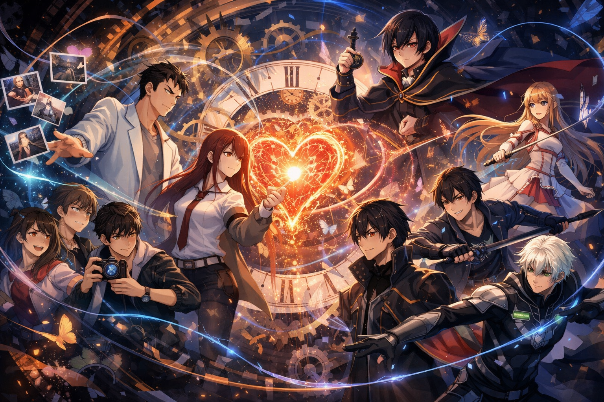

Welcome!
Mind-bending and heart-shattering stories are my favorite themes because, when they come together, they create unforgettable experiences. I chose anime because it allows creators to express ideas in artistic ways that can be emotionally powerful and psychologically intense. To me, anime has one of the highest ceilings for storytelling impact, especially when it combines plot twists, emotion, and bittersweet endings.

What You'll Find on This Site
This site focuses on anime that combine strong storytelling with emotional depth. My Top Five page lists the series that best match this theme, and the Behind the Scenes page shares extra facts, links, and media related to the fandom.